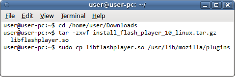

Установка или обновление Flash
Чтобы проверите актуальность установленной у вас версии Flash, посетите страницу справки по Adobe Flash Player. Если она говорит, что Flash устарел, вы можете обновить Flash, загрузив и установив его последнюю версию с сайта Adobe.
- Перейдите на страницу загрузки Flash Player Adobe.
- При выдаче запроса, сохраните файл (напр. install_flash_player_"version"_linux."processor".tar.gz).
- Откройте меню Firefox , затем щёлкните по кнопке Выход.
- Откройте окно Терминала (в Gnome, откройте меню Приложения, выберите раздел Стандартные, и в нём выберите пункт Терминал.)
- В окне Терминала, перейдите в каталог в который вы сохранили загруженный вами файл (напр. cd /home/user/Downloads).
- Извлеките файл libflashplayer.so из загруженного вами файла с помощью команды tar -zxvf install_flash_player_"version"_linux."processor".tar.gz.
- Используя полномочия администратора, скопируйте извлечённый файл, libflashplayer.so, в подкаталог plugins каталога, в который установлен ваш Firefox. Например, если Firefox установлен в каталог /usr/lib/mozilla, выполните команду sudo cp libflashplayer.so /usr/lib/mozilla/plugins и введите пароль вашего администратора, когда он будет запрошен.
